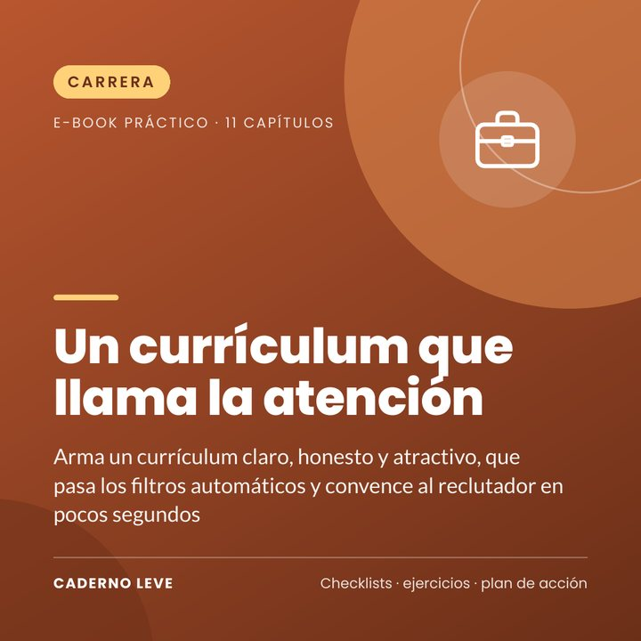

Un currículum que llama la atención
Arma un currículum claro y honesto que pasa los filtros automáticos y convence al reclutador: estructura, resumen, experiencias con resultados y adaptación a cada vacante.
Este e-book estará a la venta muy pronto.
Pago seguro y entrega del PDF a través de Kiwify
Precio en reales brasileños (BRL). El pago muestra el importe en tu moneda.
¿Envías currículums y nadie te llama? Tal vez el problema no seas tú, sino el papel.
Un currículum que llama la atención enseña, paso a paso, cómo armar un currículum que pasa los filtros automáticos (ATS) y convence al reclutador.
Aprendes la estructura ideal, a escribir un resumen fuerte, a transformar tareas en resultados, a adaptarlo a cada vacante y a evitar los errores que eliminan candidatos, incluso para el primer empleo.
Lo que vas a lograr
- Estructura ideal paso a paso
- Fórmula de resumen profesional
- Tabla «débil x fuerte» de experiencias
- Guía para el primer empleo
- Checklist final y control de postulaciones
Qué incluye
- Capítulo 1Qué busca el reclutador
- Capítulo 2Filtros automáticos (ATS)
- Capítulo 3La estructura ideal
- Capítulo 4Resumen profesional
- Capítulo 5Experiencias con resultados
- Capítulo 6Primer empleo y poca experiencia
- Capítulo 7Adaptando a cada vacante
- Capítulo 8Formación, cursos y habilidades
- Capítulo 9Diseño y formato
- Capítulo 10Errores que eliminan candidatos
- Capítulo 11Enviando y haciendo seguimiento
- ExtraResumen y plan de acción para ponerlo en práctica
- ExtraHoja de trabajo y checklist para imprimir
Para quién es
- Quien busca su primer empleo
- Quien busca reinsertarse laboralmente
- Quien quiere cambiar de área
Para quién no es
- No garantiza la contratación
- No enseña a inventar experiencias
Bonus: hoja «Mi currículum»: logros y checklist final.
Aviso importante
Este e-book tiene un fin educativo y ofrece orientaciones generales para el día a día. Adapta las sugerencias a tu realidad. Las normas, los precios, los sitios web y las aplicaciones cambian con el tiempo y varían según el país: verifica siempre la información importante en las fuentes oficiales.